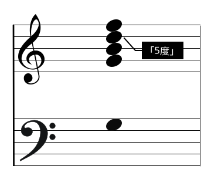

这一次是“认识专业术语”的一章。
为了顺利推进第III章的内容，我们需要预先对音程（度数）建立更加详细深入的认知。虽然这属于实践关联度看似不高的“概念层”知识，但对于在大脑中梳理与组织理论体系而言，是非常重要的基石。
[gt_radar_chart id=”gt-radar-genrechart” width=”” height=”240″ labels=”J-Pop,Jazz,Classic,Cinematic,Electronic,Pop,Rock” animation_type=”radarar”][gt_chart_data fill_color=”#2060db” stroke_color=”#2060db” data=”100,100,100,100,100,100,100″][/gt_radar_chart]
再次说明，第III章是让我们深入了解各种和弦类型及其和弦名称的章节。正如大家此前所见，和弦名称的命名规则完全是由和弦音的音程度数构成所决定的。

在第II章之前，为了尽可能减轻大家的记忆负担，我们只介绍了3度和7度的详细度数。回想起来，大和弦与小和弦中的5th在详细度数中究竟叫什么，甚至都还没有正式介绍过。


但是在第III章中，2度、4度、5度、6度都会悉数登场。是时候更亲近、更透彻地理解音程度数的概念了。实际上在学完第III章的和弦之后再去逐步记忆完全没有问题，但眼下我们至少先把概念本身的框架搭建好。
 1. 量与质
1. 量与质
首先我们把术语正规化。在构成详细音程的要素中，数字部分称为“量（Quantity）”，而“大/小/纯/增/减”等性质特征部分称为“质（Quality）”。

这里的“Quality”，和我们在“品质改变（Quality Change）”中提到的“和弦品质（Chord Quality）”含义相同，指“性质、特质、质感”。而“Quantity”则是英语中“数量、量”的意思。二者正对应了中文里的“质与量”，在英语中也常常成对出现（Quality and Quantity）。
2. 音程性质（Quality）的种类
首先我们要将“大（Major）·小（Minor）”之外的其他音程性质全部梳理一遍。
纯音程（完全音程）
刚才提到的大和弦与小和弦中的5th，被称为纯五度（完全五度，Perfect 5th）。它不是“大”也不是“小”，而是“纯（Perfect）”。

数数量时为[7个半音]的音程即为纯五度。正如我们在第I章开头所讲，纯五度能产生通透、纯净清澈的音响，因此常被用来强化和弦的厚度与骨架。 同样冠以“纯（完全）”之名的，还有4度和8度（即八度）。


若要问为什么被称为“纯（Perfect）”，背后的历史背景相当复杂，简单来说是因为4、5、8度的共鸣声响格外清澈透亮[45]。
增减音程
在大调音阶中任意挑出两个音构成4度或5度，绝大多数都会成为“纯四度”或“纯五度”。唯一的例外，就是将Si与Fa组合在一起的情况。
减五度
当把“Si - Fa”叠置在一起时，它虽然属于“5度”的一种，但与普通的纯五度相比距离缩短了。

相比于纯五度距离有所缩减，因此称其为减五度（diminished 5th）。
增四度
反过来，如果将“Fa - Si”叠置，虽然属于“4度”的一种，但这次却比普通的纯四度距离更宽了。

因为距离增加了，所以称其为（augmented 4th）。 此外，像“Do - Sol♯”这样的情况，因为“比纯五度还要宽”，所以就成了“增五度”。
三全音与等音程
无论是“Si - Fa”还是“Fa - Si”，半音数量都是6个。这就是著名的三（Tritone），一个带有强烈紧张与不祥色彩的音程。它也是我们在“副属和弦”那一回的核心关键词。 “三全音”这个词，可以说是能够同时把“增四度”和“减五度”统括起来的极其便利的词汇[46]。 “Si - Fa”和“Fa - Si”虽然半音数完全相同，但度数却因记法不同而分别是“Si-Do-Re-Mi-Fa共5度”以及“Fa-Sol-La-Si共4度”。这种音响相同但名称度数不同的关系，称为等音程（异名同音程，Enharmonic Interval）。
等音程 (Enharmonic Interval) : 像“增四度”与“减五度”那样，半音数完全相同但在理论记法上拥有不同称呼的音程之间的关系。 : 相当于“等音（异名同音）”概念的亲戚。
减七度
不仅纯四度、纯五度，在其他音程中也会出现“增·减”。例如原本就较窄的“小七度”，当其距离进一步缩短时，“减”就会再次登场。

因此可以这样理解：“大/小·纯”是平稳运行的常规基准，一旦越出这个基准边界，“增·减”就会出场。

音程性质的种类，基本上就是这5种[47]。
3. 2度与6度
在3·7度以及4·5度都讲解完毕后，剩下的就是2度与6度了。它们都是通过“大/小”来区分的度数，和3·7度完全一样，距离较长就称为“大（Major）”，较短就称为“小（Minor）”，非常单纯直观。
大二度与小二度
大二度与小二度的区分非常简单：相差“全音”即为大二度，相差“半音”即为小二度。


日常中最常遇见的通常是“大二度”。
大六度与小六度
大六度与小六度的区分由于距离较远，稍微麻烦一些。在衡量时，可以先以大和弦与小和弦中熟悉的“纯五度”为基准，在纯五度的基础上加上**“全音”即为大六度，加上“半音”即为小六度**。


关于2度与6度的辨别，在第III章学到实际运用这些音程的和弦之后，再一步步熟悉记忆即可。
4. 总结与补充
我们再次以C（Do）音为基准，将1~8度的音程整理成一张一览表。

说实话，能够看着乐谱瞬间脱口而出度数，放在很久之后再掌握也完全无妨。今天的内容主要是作为一次全面的概念介绍。
纯一度与同音（Unison）
顺带一提，像“Do与Do”这样完全相同的音、距离为零的音程称为“纯一度（完全一度）”，但在英语中基本不使用这种表达，而是称作Unison（齐鸣/同度）或Prime。
音程度数的符号简写
音程度数在中文里很凝练，但在英语中诸如“augmented/diminished”等单词相当长。因此，正如用简短记号代表和弦名称一样，音程度数也有简洁的符号表示：
| 中文 | 英语 | 简写符号 |
|---|---|---|
| 大 | major | M 或 Δ |
| 小 | minor | m 或 – |
| 纯 | perfect | P |
| 减 | diminished | o |
| 增 | augmented | + |
这与和弦名称在记法上有很多共通之处。毕竟决定和弦名称的底层基准本身就是音程关系，符号具有相似性也是理所当然的。用这些符号重新绘制的一览图如下：

看起来非常清爽规整。本网站在后续的内容中，也会偶尔采用这种简洁的记法。
超过八度的情况
我们顺便了解一下相距超过1个八度的两音之间的音程。

上面将相隔1个八度扩展前后的音程并列对比。正如你所看到的，核心要点在于：量（Quantity）增加了“7”，但性质（Quality）绝对保持不变[48]。
在实践中记忆
正如之前所介绍的，两个音所构成的音程即使仅在八度以内也有132种可能。

如果连等音（异名同音）也考虑进去，实际上会有更多的变化模式。想要立刻对答如流显然是不现实的。能够敏捷反应出度数，完全可以放到很久以后，花上几年时间慢慢熟练也毫不为奇。 相反，极其低效且不可取的做法，是盲目刷谱面题目，或者死记硬背半音数量与度数的对应关系。因为以这种方式记忆的信息，不过是没有与现实音乐世界建立任何关联的冰冷符号与枯燥数字罗列而已。 记忆的秘诀在于“建立联结”。在具体的哪种和弦上会出现这个度数？它的实际音响听起来是怎样的质感？只要将理论度数与真实的实践信息紧密捆绑，它就会化为难以遗忘的牢固记忆。而且这种方式不仅学起来毫不痛苦，还能在边作曲、边分析中同步掌握，一举两得。 随着我们在第III章中接触越来越多独特的和弦，在这些学习与创作实践中逐步掌握详细度数，才是最自然、最轻松的途径。
总结
- 详细音程由大、小、纯、增、减等“质（Quality）”，以及用音名间隔计算的数字“量（Quantity）”两部分组成。
- 2、3、6、7度具有“大·小”的性质，但绝不会有“纯”；反之，1、4、5度具有“纯”的性质，但绝不会有“大·小”。“增·减”性质则可能出现在任意度数中。
- 辨别详细音程时，比起死记“等于几个半音”，将其与实际听感、真实和弦联系起来记忆要明智得多。
- 现阶段完全无需立刻精通所有音程，随着后续学习和弦理论逐步自然消化，负担最小、效果最佳。